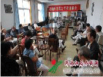
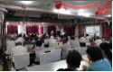

骆马湖水利管理局主办
站内搜索:
开始检索
办公自动化
联系我们
天气预报：
今天 晴 24度
今天是： 2016年11月8日 星期二
首页
单位概况
新闻中心
水利管理
政策法规
精神文明
滚动信息：
导爱国、敬业、诚信、友善。 开展2016年海选“我们身边的好青年” 活动专题网页http//hqn.jschina......
政府信息公开
公开目录
公开指南
机构职能
政策法规
公开目录
公开指南
机构职能
政策法规
公开目录
公开指南
机构职能
政策法规
公示公告
更多>>
骆马湖水利管理局水政执法装备网...[8-28]
骆马湖水利管理局水政执法装备网...[8-28]
骆马湖水利管理局水政执法装备网...[8-28]
骆马湖水利管理局水政执法装备网...[8-28]
骆马湖水利管理局水政执法装备网...[8-28]
重要通知
【登录】更多>>
防汛抗旱
更多>>
·台风“莎莉嘉”影响结束 琼粤桂有...
·台风“莎莉嘉”影响结束 琼粤桂有...
·台风“莎莉嘉”影响结束 琼粤桂有...
·台风“莎莉嘉”影响结束 琼粤桂有...
本站要闻
更多>>
淮河水保局、环保部华东环境保护督查中心开展入河...
2016-10-12
淮河水保局、环保部华东环境保护督查中心开展入河...
2016-10-12
淮河水保局、环保部华东环境保护督查中心开展入河...
2016-10-12
淮河水保局、环保部华东环境保护督查中心开展入河...
2016-10-12
淮河水保局、标本兼治 惩防并举 综合整治 沐河禁采始终在行动
2016-10-16
淮河水保局、标本兼治 惩防并举 综合整治 沐河禁采始终在行动
2016-10-16
淮河水保局、标本兼治 惩防并举 综合整治 沐河禁采始终在行动
2016-10-16
淮河水保局、标本兼治 惩防并举 综合整治 沐河禁采始终在行动
2016-10-16
重点推荐
更多>>
陈雷主持国家防总会商会 部署当前防汛防台风...
2016-10-12
陈雷主持国家防总会商会 部署当前防汛防台风...
2016-10-12
陈雷主持国家防总会商会 部署当前防汛防台风...
2016-10-12
陈雷主持国家防总会商会 部署当前防汛防台风...
2016-10-12
水政水资源
更多>>
组织实施取水许可制度和水资源费征收制度
组织实施取水许可制度和水资源费征收制度
组织实施取水许可制度和水资源费征收制度
图片新闻

专题报道
骆马湖局“两学一做”学习教育..
骆马湖局“两学一做”学习教育..
骆马湖局“两学一做”学习教育..
骆马湖局“两学一做”学习教育..
网上视频
实时水情
站 点 水位 流量 降雨量
沂河港上 25.3 1500 18
嶂 山 闸 22.3 3500 19
洋 河 滩 22.3 0 19
沭河新安 22.3 500 19
运 河 镇 22.3 1200 19
图片中心：

基层站点：
邳州河道管理局
新沂河道管理局
沭阳河道管理局
灌南河道管理局
嶂山闸管理局
宿迁水利枢纽管理局
瑞龙公司
友情链接：
沂沭泗水利管理局
淮河水利委员会
中国水利部
南四湖水利管理局
沂沭河水利管理局
网上宿迁
江苏省水利厅 宿迁市水务